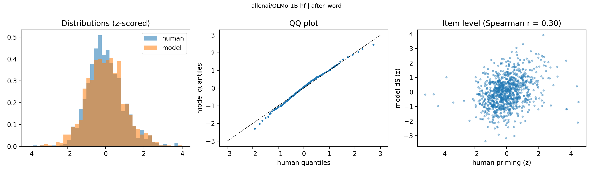
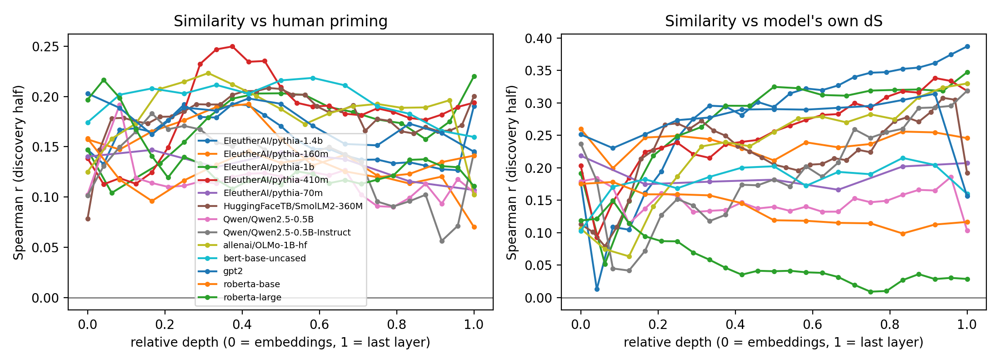

An item-level test against the Semantic Priming Project
Harrisburg University of Science and Technology | Psychonomic Society Annual Meeting
If a language model finds a word easier to predict after a related word, does it find the same items easy that people do?
avgZ_prime = unrelated minus related z-scored RT\[\Delta S = S(\text{target} \mid \text{unrelated cue}) - S(\text{target} \mid \text{related cue}), \quad S = -\log P\]

| Spearman \(r\) [95% CI] | |
|---|---|
| Discovery | .35 [.27, .43] |
| Confirmation | .24 [.15, .33] |
| Noise ceiling | about .85 |
| Format | Mean confirmation \(r\) |
|---|---|
| Bare “cue target” | .07 |
| Bare + 2, 5 or 10 example pairs | .06 |
| Frames that signal a pair (7 formats) | .20 |
Mean confirmation \(r\) across frames:

| Prime type | Long SOA | Short SOA |
|---|---|---|
| First associate | .17 | .13 |
| Other associate | .15 | .14 |
Mean Spearman \(r\) over the 8 configurations chosen on discovery; no re-selection.
Thank you
ebuchanan@harrisburgu.edu
Psychonomic Society 2026 | Code and data: priming-llms repository